The operating microscope
It magnifies and illuminates the working area. In endodontics, it helps to locate and treat very fine canals that are difficult to see with the naked eye.
10, avenue Marceau, Paris 8e
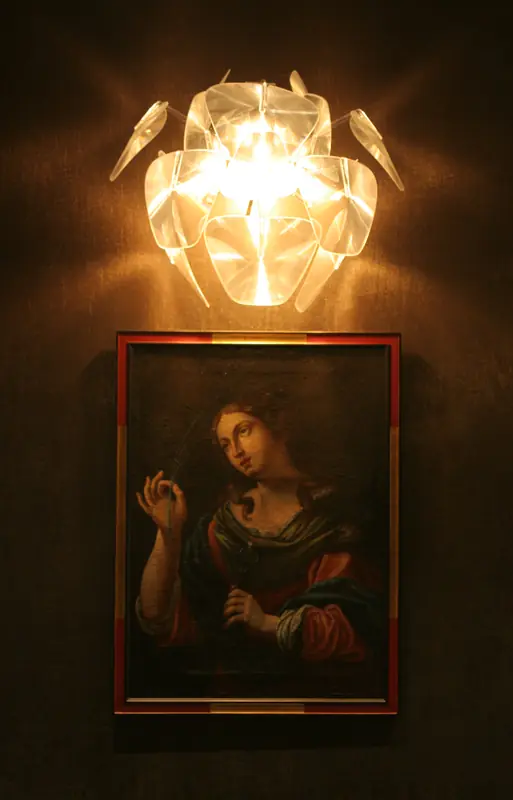
For many years, the practice had no plaque outside and no website. Patients came to us on the recommendation of another dentist or doctor, a friend or a family member.
That way of working has not changed: each treatment is carried out by the dentist trained in that field, and cases that involve more than one area are discussed together before we propose a treatment plan.
Five areas of care under one roof. Choose an area to find out more about the treatments we offer.
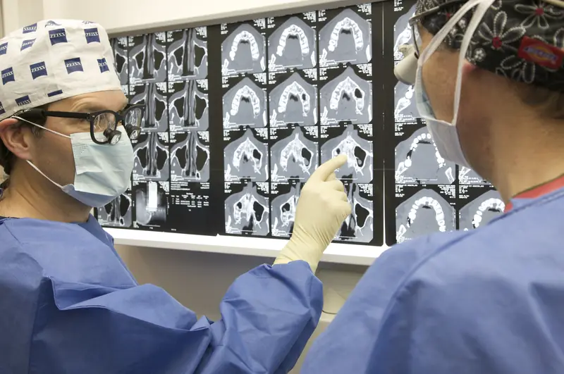
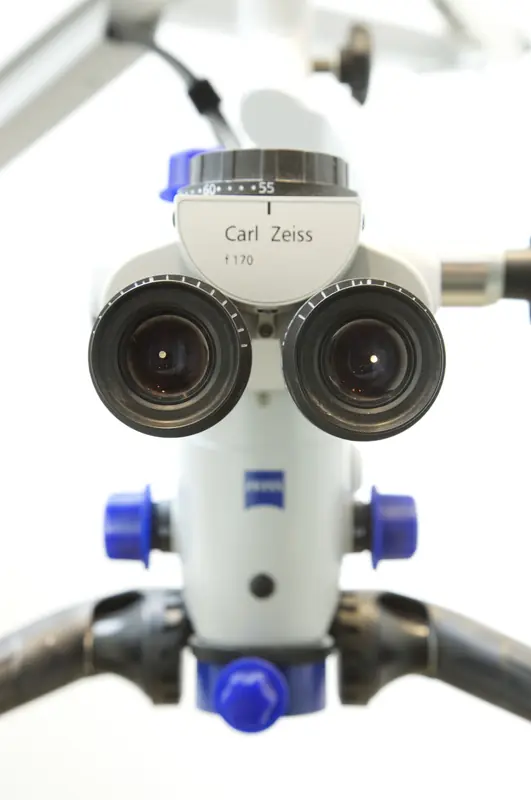
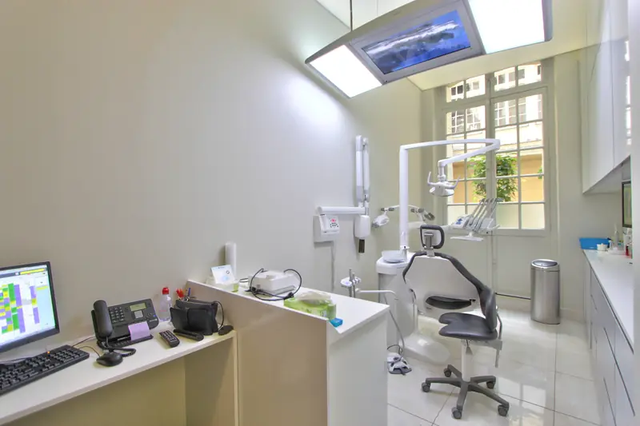
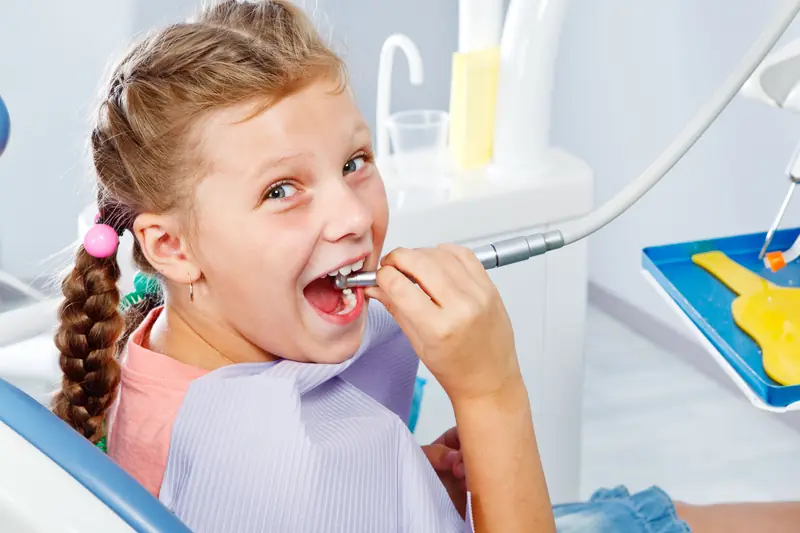
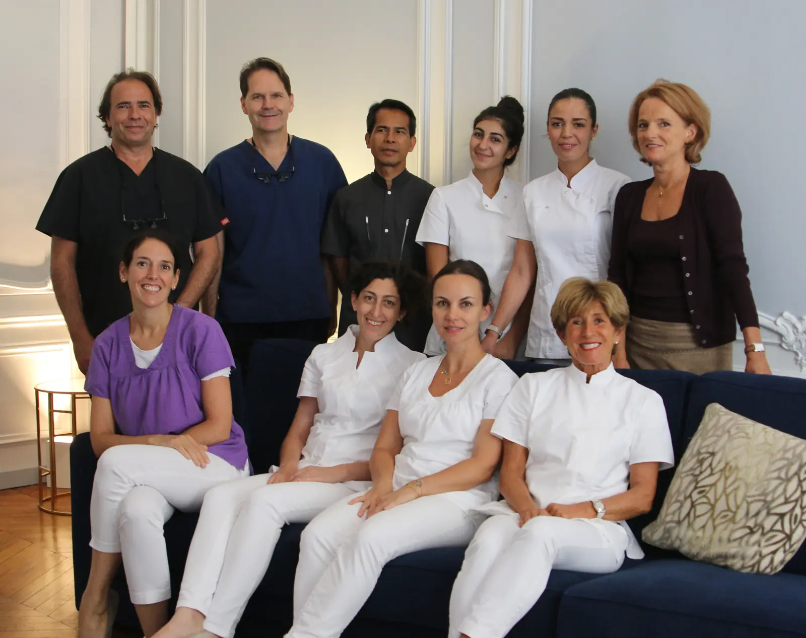
Five dentists, each working in their own field, supported by dental nurses who look after patients from one appointment to the next.
The practice occupies a Haussmann-era apartment a short walk from place de l’Alma. The waiting room, treatment rooms, operating room and recovery room have been designed so that every appointment can take place in calm surroundings. One treatment room and the toilet facilities are adapted for people with reduced mobility.
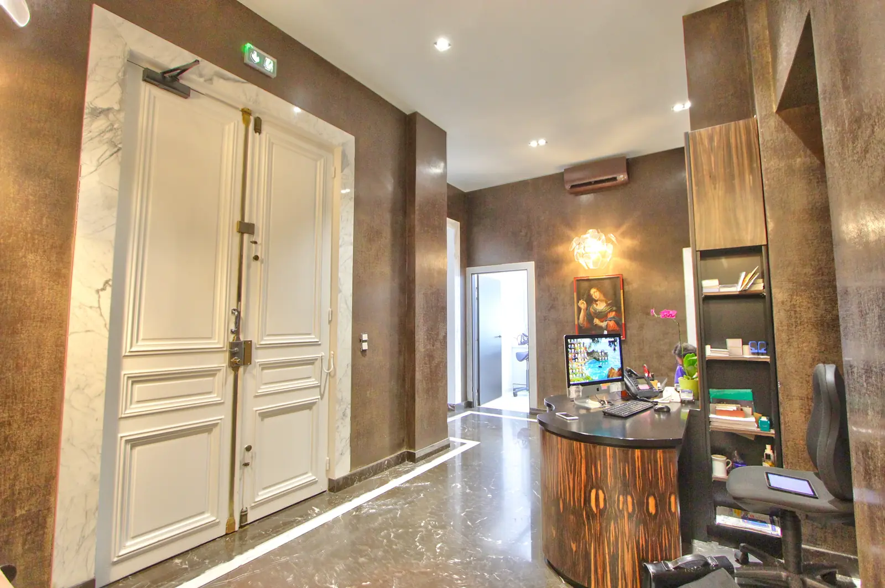
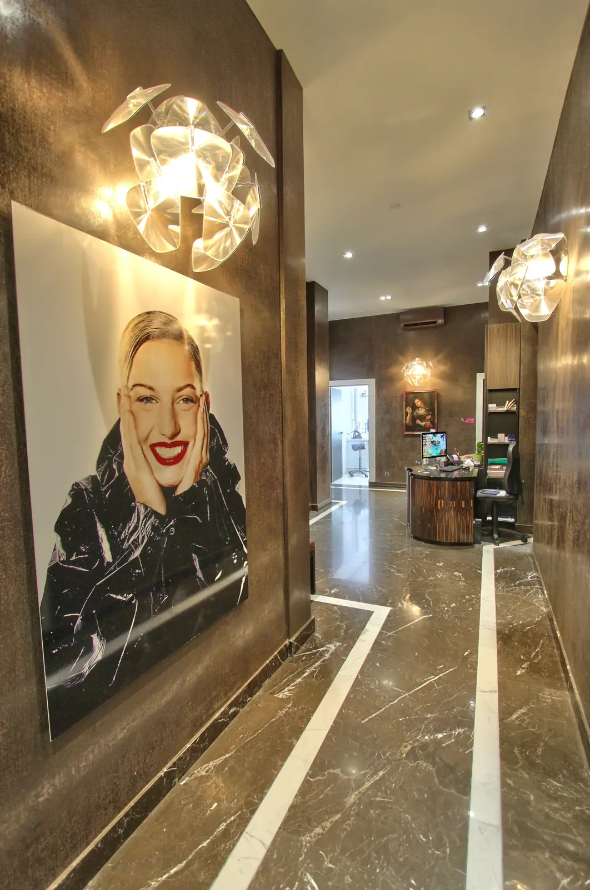
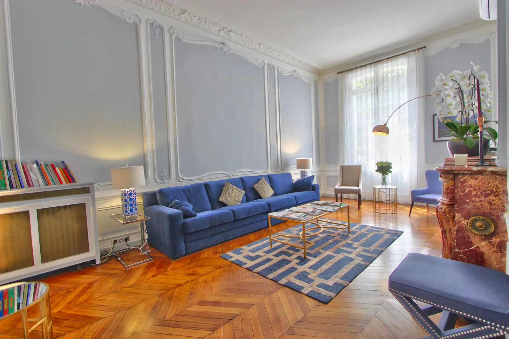
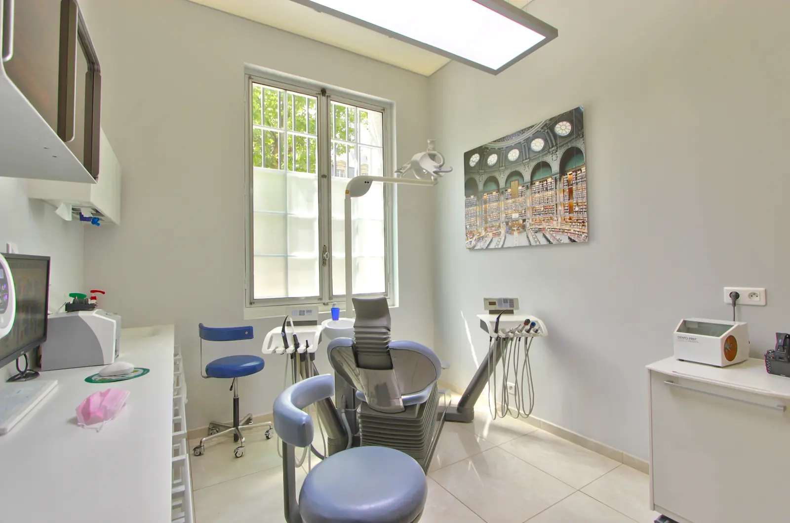


Equipment chosen for accurate diagnosis and safe procedures.
It magnifies and illuminates the working area. In endodontics, it helps to locate and treat very fine canals that are difficult to see with the naked eye.
Before an implant is placed, 3D images show the volume of bone available. They are used to choose the implant and to prepare the procedure.
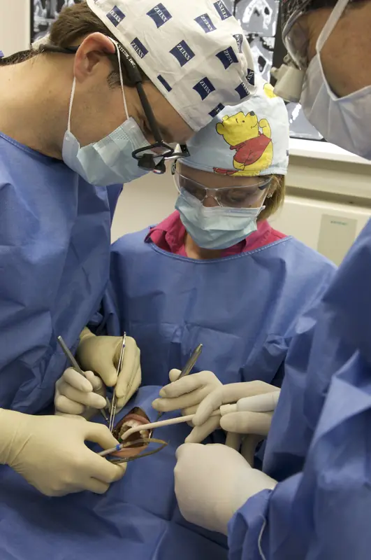
Surgical procedures take place in a dedicated room, separate from the treatment rooms, following a strict aseptic protocol.